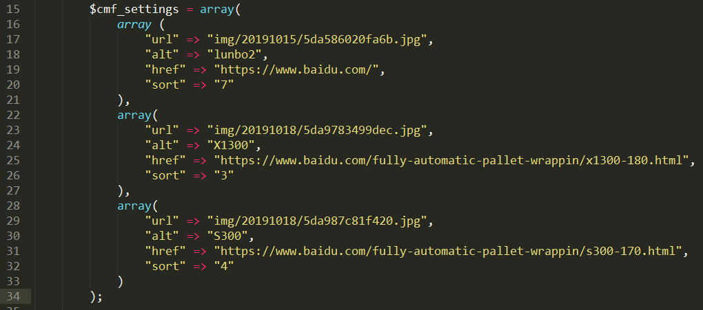
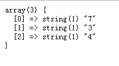
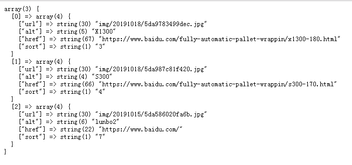

有一个数组如下

我想对其进行一个排序，按照其“sort”的值的大小进行排序，3->4->7。
解决方法如下：
1、首先介绍php的两个方法
方法一：array_column() 返回输入数组中某个单一列的值。php版本 5.5+。
| 参数 | 描述 |
|---|---|
| array | 必需。规定要使用的多维数组（记录集）。 |
| column_key |
必需。需要返回值的列。 可以是索引数组的列的整数索引，或者是关联数组的列的字符串键值。 该参数也可以是 NULL，此时将返回整个数组（配合 index_key 参数来重置数组键的时候，非常有用）。 |
| index_key | 可选。用作返回数组的索引/键的列。 |
例子一：
1 $cmf_settings = array(
2 array (
3 "url" => "img/20191015/5da586020fa6b.jpg",
4 "alt" => "lunbo2",
5 "href" => "https://www.baidu.com/",
6 "sort" => "7"
7 ),
8 array(
9 "url" => "img/20191018/5da9783499dec.jpg",
10 "alt" => "X1300",
11 "href" => "https://www.baidu.com/fully-automatic-pallet-wrappin/x1300-180.html",
12 "sort" => "3"
13 ),
14 array(
15 "url" => "img/20191018/5da987c81f420.jpg",
16 "alt" => "S300",
17 "href" => "https://www.baidu.com/fully-automatic-pallet-wrappin/s300-170.html",
18 "sort" => "4"
19 )
20 );
21
22 $cmf_arr = array_column($cmf_settings, 'sort');
打印$cmf_arr得到如下结果

方法二：array_multisort() 函数返回一个排序数组。您可以输入一个或多个数组。函数先对第一个数组进行排序，接着是其他数组，如果两个或多个值相同，它将对下一个数组进行排序。
array_multisort(‘数组1’, 'SORT_ASC(升序)', '数组2', '数组3', '数组4', '数组5', '数组6');
数组1：进行排序的数组。
SORT_ASC(升序)：是对数组1的排序方式。
'数组2', '数组3'......：根据数组1的排序方式对'数组2', '数组3', '数组4', '数组5', '数组6'进行排序。
数组1升序排序： 第二组数据[1] => "3" 位置变成[0] => "3",那么'数组2', '数组3', '数组4', '数组5', '数组6'的第二组数据[1] => "不管是什么数据" 位置变成[0] => "不管是什么数据"。
| 参数 | 描述 |
|---|---|
| array1 | 必需。规定数组。 |
| sorting order | 可选。规定排列顺序。可能的值：
|
| sorting type | 可选。规定排序类型。可能的值：
|
| array2 | 可选。规定数组。 |
| array3 | 可选。规定数组。 |
例子二：
1 $cmf_settings = array(
2 array (
3 "url" => "img/20191015/5da586020fa6b.jpg",
4 "alt" => "lunbo2",
5 "href" => "https://www.baidu.com/",
6 "sort" => "7"
7 ),
8 array(
9 "url" => "img/20191018/5da9783499dec.jpg",
10 "alt" => "X1300",
11 "href" => "https://www.baidu.com/fully-automatic-pallet-wrappin/x1300-180.html",
12 "sort" => "3"
13 ),
14 array(
15 "url" => "img/20191018/5da987c81f420.jpg",
16 "alt" => "S300",
17 "href" => "https://www.baidu.com/fully-automatic-pallet-wrappin/s300-170.html",
18 "sort" => "4"
19 )
20 );
22 $cmf_arr = array_column($cmf_settings, 'sort');
24 array_multisort($cmf_arr, SORT_ASC, $cmf_settings);
打印$cmf_settings得到如下结果，满足需求。

总结：利用 array_column() 把要排序的键值提取出来，在利用array_multisort()对数组进行排序。理解起来有点绕，不过以后的用处会很大的。
如有错误请指出，谢谢。